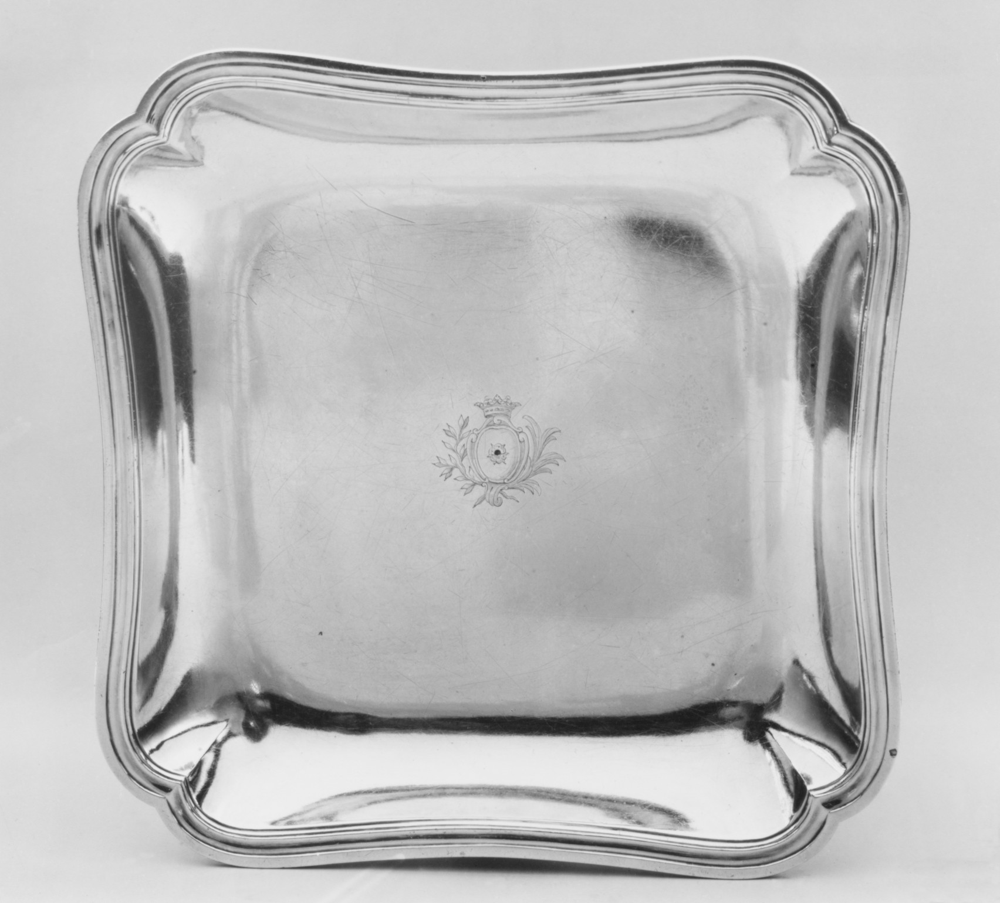

Study 10 / 11 October 202648.187.168 → 48.187.169 → 48.187.170
Three numbers
A square Spriman dish, then two scalloped dishes by Morel.

48.187.16801
Dish
Charles-Louis-Auguste Spriman (or Spriment)
1781–82 / Silver

48.187.16902
Dish (one of a pair)
Jean-Louis Morel
1763–64 / Silver

48.187.17003
Dish (one of a pair)
Jean-Louis Morel
1763–64 / Silver
48.187.168 is another silver dish from the same bequest, one number before the Morels, but its title, maker, and date differ. The next two entries repeat title, maker, date, and material; their photographs show matching scalloped forms. Accession order led me here; it does not make the pair. I read 48.187.169 and 48.187.170 together, though their Met records do not link. 48.187.168 / 48.187.169 / 48.187.170.